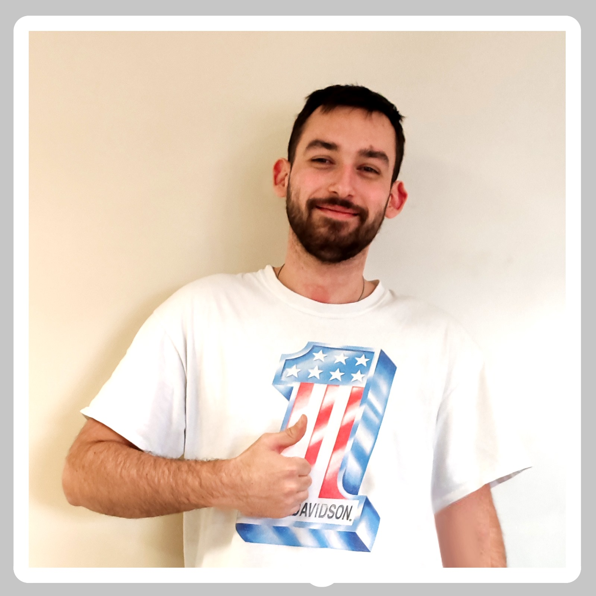

Sticker Map
Mappa di dove sono collocati i miei sticker
Project Work 1 anno
Project work ITS anno 1

Cosplay
Faccio Cosplay nel tempo libero

Foto
Ho un drone e faccio belle foto
Codice Biblioteca
Gestionale per una biblioteca
websocket
codice js per una comunicazione websocket